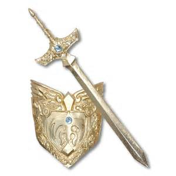

|
|
|
第十四章 ヨーフランツェの調停
ザビーンス川の川辺に二頭の人馬がとまっていた。一頭にはガヴァーンが乗り、もう一頭には真っ赤な甲冑をつけた騎士が騎乗していた。この騎士は、パルシファルだった。外衣も馬衣も深紅で、兜にはリースがさしてあった。このリースはグラモフランツが監視している木から折ってきたものだ。赤い騎士は高名なグラモフランツとの戦いを求めて、この地にきたのである。リースを略奪すれば、グラモフランツと戦えるものと思い、この川辺に馬を止めて待っていたのだ。
偶然にも、そこへやってきたガヴァーンは、赤い騎士の兜のリースに気がつくと、グラモフランツ王が自分を待ち構えているのだと思った。赤い騎士をグラモフランツと間違えたのである。この川辺では、観戦する者がいないが、自分との一騎討ちをするためにやって来た相手を、見過ごすわけにはいかなかった。ガヴァーンは戦う決意をかためた。
二人の視線は、火花が散ったように激しく交錯した。二人は拍車をかけて、襲歩からものすごい速さで馬を走らせ、激しくぶつかり合った。相手を誤解したままの一騎討ちが始まった。ガヴァーンとパルシファルは、プリミツェールの河畔で出会って以来、互いを尊敬し、兄弟のような友情で結ばれていた。二人はまったく相反する星ののもとに生まれ、両極のような運命を背負っていたが、互いの生きざまに、強く引かれあっていた。それ故に、この戦いは悲劇だった。この戦いに勝利しても、得るものは何もない。勝てば嘆きとむなしさが待っているだけだった。しかし、二人は、そんなことは露ほども知らずに、誠実な騎士道精神にのっとり、正式な戦いを激しく繰り広げた。
二人の槍はともに相手を馬上から突き落とした。二人は立ち上がって、剣をとり、激しく打ち合った。楯は打ち砕かれ、破片が草地に散らばった。
ちょうど、その時、ロシェ・ザビーンスの町にいるグラモフランツのもとに、イトニエーからの使者が到着していた。渡し守プリパリノートの娘ベーネだった。ベーネはイトニエーを心から愛していたので、イトニエーの恋が実ることを信じて、伝言を届けたのだ。
「私の主人イトニエー様は、他の大勢の女性とともに魔法の城を出立しました。今、ヨーフランツェに向かっています。これはイトニエー様からの使いのしるしです。」
ベーネはこう言って、指輪をさし出した。この指輪は、以前グラモフランツがガヴァーンの手を借りて、イトニエーに送り届けていたものだった。
これを聞いたグラモフランツは喜び、またベーネが使いに来てくれたことを、快く思い、ベーネを歓待した。
「それはうれしいことだ。よくここまで使いに来てくださった。どうか旅の疲れを癒やして、くつろいでください。」
ベーネは上機嫌なグラモフランツのそばでおしゃべりをして、時を過ごした。
そこへ、アーサー王からの使者たちが到着した。使者たちは、グラモフランツのご前へ通され、伝言を届けるべく話しはじめた。
「殿。私どもをここへ使わされたアーサー王は、誰もが認める立派なお方です。アーサー王と言えば、すべての騎士の尊敬の的であり、騎士道の頂点におられる偉大なお方です。どうして、そのような方の名誉を傷つけるようなことをされるのでしょうか。ガヴァーンにはアーサー王と円卓の騎士がついています。あなたが勝っても、戦いは終わらないでしょう」
グラモフランツは答えた。
「私は何があっても、ひるむことはない。一度決めた一騎討ちは必ず行う。勝つか負けるか、決着は今日つける。
アーサー王が王妃と大勢の女性を連れて来られたことは聞いている。それは歓迎しよう。だが、私はどんな勢力をも恐れない。
私は相手が一人ならば、戦わない男だ。だが、今日は別だ。愛する女性イトニエーのために戦うのだ。一騎討ちの勝利の栄誉を得て、イトニエーの愛をいただきたい。
今、あの方は、こちらに向かっている。監禁されていた魔法の城から解放されたことは、本当にうれしいことだ。」
グラモフランツのそばにいたベーネは、安心して話を聞いていた。グラモフランツの勇猛な振る舞いを知っていたので、その身を案ずることはなかった。グラモフランツは必ず一騎討ちに勝利すると思っていたのだ。しかし、一騎討ちの相手がイトニエーの兄ガヴァーンだと知っていたら、安堵の代わりに恐れと怒りに支配されていただろう。
その時、ラッパが鳴り響いた。進軍が始まろうとしていたのだ。グラモフランツに豪華な装具が運ばれてきた。グラモフランツは完全武装をすると、イトニエーから届けられた指輪にキスをした。いよいよ出陣だ。グラモフランツは大きな軍勢を率いて、ヨーフランツェに向かって出発した。
アーサー王の使者たちは、軍勢が出発の準備をする様子を見て、すぐにここを立ち去った。急いで自陣に戻らなければならなかった。ところが、馬を走らせて、自陣のテントに戻る途中、ザビーンス川のほとりで、大変なものを見た。ガヴァーンが一騎討ちをしていたのだ。しかもガヴァーンは戦いにおいて劣勢で苦境にあえいでいた。小姓たちは思わず大声で叫んだ。
「ガヴァーン殿…。」
ガヴァーンは敗北寸前だった。相手の力がガヴァーンよりも、はるかにまさっていた。もし小姓が主君の名を叫ばなかったら、勝利は相手のものだった。
小姓のさけび声を聞いたパルシファルは、手にしていた剣を放りなげた。パルシファルは泣きだしながら言った。
「不幸がやってきた。私は幸せから見放されている。
この高貴にして親愛なるガヴァーンと戦わなければならないとは。
私の不運が招いたのだ。私の罪だ。私の罪の報いなのだ。
私は栄光の騎士イテールを殺した。
甲冑が欲しいがために、
自分の欲を満たすために、人を殺したのだ。
私は母を置き去りにして、死に追いやった。
自分のことしか考えていなかったのだ。
母よりも、自分が大事だったのだ。
そして私は聖杯王アンフォルタスに
問いかけなかった。
すべて私の罪だ。」
ガヴァーンは、相手の騎士が自分の名前を叫んだのを聞いて、驚いて言った。
「私の名を語るとは、いったいあなたはどなたなのだ。一度も負けたことのない私に勝利した、あなたの名前をお聞かせ願いたい。」
「ガヴァーン殿。あなたの一族のパルシファルだ。これからは、いつでもあなたの力になろう。」
ガヴァーンは衝撃と同時に安堵をおぼえた。
「パルシファル…。お前だったのか。お前になら、負けてもいい。お前と私はもともとひとつなのだから。お前は誠実だ。お前はお前自身に打ち勝ち、二人に勝ったのだ。」
ガヴァーンはこう言うと、気が抜けてしまい、立っていられなくなった。ガヴァーンは、その場に崩れ落ちた。
小姓はガヴァーンの兜をはずし、介抱した。
この時、ヨーフランツェの野原には、両軍の軍勢が集結していた。野原には、試合場が設営されていた。試合場の両側には、四百メートルに渡って、策が並んでいた。策の外側には観客席があり、四千人を超える婦人が詰めかけていた。ここで、行われる予定の、グラモフランツとガヴァーンの一騎討ちが始まるのを、今か今かと、待っていた。ところが、そこへ現れたのは、グラモフランツだけであり、ガヴァーンは現れなかった。ガヴァーンのかわりに現れたのは、伝令の小姓だった。ここからほど近いザビーンス川のほとりで、予期せぬ一騎討ちが行われてしまったことを、急いで知らせにきたのだ。試合場にいた観客は、大きなため息をついた。
知らせを聞いたグラモフランツは、一騎討ちが行われた場所に向かった。パルシファルとガヴァーンのいるところに到着した時、二人は草の上にすわっていた。二人の様子を見たグラモフランツは、これまでに見たことのないような激しい戦いが、たった今、行われたことを察した。
一緒についてきたベーネは、力無くすわりこんでいるガヴァーンを見て、悲痛のさけびをあげた。
「どうして、こんなにいたわしいお体に…。殿は騎士の鏡でいらしたのに。」
ベーネは、ガヴァーンの顔の血と汗をふきとってあげた。グラモフランツは言った。
「ガヴァーンよ。気の毒な姿だな。その体では、よもや戦うことはできないだろう。弱っているお前と戦うなら、女と戦う方がましだ。一騎討ちは明日に延ばそう。今日はゆっくり休みたまえ。」
パルシファルはグラモフランツの高貴な姿を見て、すぐに兜をぬいで言った。
「殿。私の一族のガヴァーンが、あなたに不都合なことをしたのなら、かわりに私があなたと一騎討ちをしよう。」
グラモフランツは答えた。
「ガヴァーンは明日、私に年貢を納めるのだ。リースの代償を支払ってもらう。あなたは立派な勇士だが、この戦いの相手ではない。」
これを聞いていたベーネが言葉をはさんだ。
「あなたは誠実さのかけらもない馬鹿者です。あなたが愛する人は、この方の手の中にあるのですよ。ガヴァーン殿はイトニエー様のお兄さまです。だから、あなたは自ら負けを宣告しているようなものです。あなたには、イトニエー様を愛する資格はありません。どうせ偽ものの愛だったのでしょう。」
グラモフランツはベーネの怒りを買っても、考えを変えるつもりはなく、ベーネに頼んだ。
「ベーネよ。私は一騎討ちをするが、怒らないでくれ。イトニエー様には、力のおよぶ限り、尽くすつもりだ。私の愛を伝えてほしい。『私は永遠のしもべです』と。」
ベーネはグラモフランツが理解できなかった。
「あなたには何を言っても無駄ですね。どうぞ不幸な道を選んでください。」
この言葉によって、この場は散会となり、すべての人がザビーンス川から去っていった。ガヴァーン、パルシファル、ベーネは、ガヴァーンのテントへ戻っていった。
テントに着いたガヴァーンとパルシファルは、戦いの疲れと余韻を感じながら、再会を喜んだ。ガヴァーンは言った。
ガヴァーンはパルシファルに着がえをすすめてから言った。
「そなたの一族の婦人方がここに四人いらっしゃるのだ。紹介したいので、今から挨拶に行こう。」
パルシファルは少し考えてから答えた。
「それは遠慮しておこう。ご婦人方にいやな思いはさせたくないので、挨拶には行きたくない。プリミツェールの河畔で、私がこっぴどくののしられたことを知っているだろうから、私のことなど見たくもないだろう。」
「それは思い違いだ。誰もそのようには思っていない。誰しもが、かような立派な騎士を歓迎したいと思っている。さあ、行こう。」
ガヴァーンはそう言って、パルシファルを四人の女性のところへ連れていった。
四人はパルシファルに挨拶のキスをした。ところが、そばにいたオルゲルーゼは、挨拶を交わすことを苦痛に思っていた。一度、愛を告白して断られた相手に気持ちよく挨拶をすることなどできなかった。オルゲルーゼの様子に気づいたパルシファルは、気をきかせて言った。
「美しき公妃に、ごあいさつをさせていただきとうございます。」
オルゲルーゼは、意外にも礼儀正しい心のこもった言葉を受けとったので、流れにまかせて、挨拶を交わすことができた。
ガヴァーンはオルゲルーゼに、食事のときにパルシファルの隣にすわって相手をするように言った。するとオルゲルーゼは怒って言った。
「女性を侮辱するような人を、どうやってもてなせと言うのですか。」
パルシファルは横から口をはさんだ。
「公妃さま、女性をあなどるようなことはいたしません。お相手をしていただければ、たいへん嬉しく、光栄に思います。」
パルシファルの礼儀正しい態度を見て、オルゲルーゼは気を取りなおした。
一同は食事の席に着いた。
食事の席にいたイトニエーは、ベーネの姿に気がついた。ベーネは悲しそうな顔をして、目がひそかに泣いていた。イトニエーは、ベーネが悲しんでいるのを見て、胸騒ぎがした。
「どうしてベーネがここにいるのだろう。私が愛する方のもとに使いに出して、今はそこにいるはずなのに。どうして…。もしも、グラモフランツ様に愛を受けとっていただけないのなら、生きる望みを失ってしまいます。」
イトニエーはそう思った。
食事が終わったとき、アーサー王と王妃ギノヴェーアは、騎士と婦人の一団を連れて、パルシファルを訪ねてきた。アーサー王はパルシファルに称賛の言葉を述べた。
「パルシファルよ。お前がこれまでに掲げた栄誉は、実に輝かしいものだ。お前の名声は遠く広く知れわたっている。お前には、誰にも勝る栄誉が与えられるべきである。」
パルシファルは答えた。
「アーサー王。以前にお会いした時は、私は激しく非難され、名誉をすべて失ってしまいました。それ以来、私は自分が不名誉な人間であると思ってきました。今、お褒めの言葉をいただけるとは、意外なことです。もし、お言葉を信じてよいのであれば、大変名誉なことであり、嬉しく思います。」
そこに居合わせた人々は、パルシファルの言葉を拍手喝采でたたえた。
パルシファルは立ち上がって言った。
「ここにおいでの皆さん、私はあるとき、不思議な事件で円卓を離れることになりました。それは私にとって不本意なことでした。もし、皆さんの許しが得られるものならば、私は再び円卓の席へ戻りたいと思っています。どうか皆さんのお力で、そのようにお取りはからいいただけますようお願いいたします。」
再び拍手喝采が起き、アーサー王はパルシファルが円卓へ参加することを快く表明した。
それから、パルシファルはアーサー王とガヴァーンに、明日行われる予定のガヴァーンの一騎討ちを自分に任せてほしい、と頼んだ。
「私は、グラモフランツと一騎討ちをするために、この地へやってきたのだ。わざわざ木の枝を折り、リースを作って彼が来るのを待っていた。そこでガヴァーンに出会うとは思わなかった。ガヴァーンをグラモフランツと思いこみ、間違えて戦ってしまったのだ。だからかわりに私を一騎討ちに行かせてください。私に任せてください。」
ガヴァーンは、即座に答えた。
「この戦いは、誰かにかわってもらうものではない。私は勝利の栄誉を獲得すると信じている。今はかわる時ではない。代理の申し出をしてくれたそなたにも、幸運があることを祈っている。」
その晩、パルシファルは装備の点検をした。楯が使い物にならないほどに小さく砕けていたので、新しい楯を用意し、武具の紐が切れているところは直した。馬にも入念にブラシをかけた。就寝するときには、寝床のわきに甲冑を並べておいた。
自陣に戻ったグラモフランツは、ガヴァーンと戦った騎士が、自分と戦うために、木の枝を折って待っていたことを聞くと、無性に腹を立てた。自分が約束の一騎討ちに遅れたことを悔やんだ。もう少し早く行っていれば、二人の騎士のうち、どちらかの騎士とは戦えたのかと思うと、いても立ってもいられなくなり、その晩は神経が高ぶって、よく眠れなかった。翌朝、グラモフランツは気がはやって、空が白みかけた頃には、一騎討ちの試合場に向かっていた。
パルシファルはぐっすりと眠り、十分に休息をとり、その朝早くに目を覚ました。そして、空が白みかけたころに、こっそり陣営を抜けだした。甲冑で完全武装し、兜にはリースを付けていた。目的地は、約束の一騎討ちが行われるヨーフランツェの試合場だった。
すると、そこに馬を止めているグラモフランツがいた。二人は言葉を交わさず、いきなり相手の楯を槍で貫いた。槍は粉々に折れ、二人はすぐに剣で戦いはじめた。
そのころガヴァーンも一騎討ちの準備をしていたが、勇敢なパルシファルの姿が見えないという知らせを聞いた。
騎士や夫人たちは、アーサー王のテントに集まり、出発の儀式をすませた。一行は隊列を組んで、試合場に向かっていった。ところが、試合場が目に入るところまで来たとき、すでに戦っている二人の騎士の姿が見えた。
グラモフランツは劣勢だった。常々、一人と戦うことを軽蔑していたグラモフランツではあったが、今はパルシファル一人を相手に、六人と戦っているように感じた。グラモフランツはこの戦いで、パルシファルから礼儀を教えてもらった。それ以後は、一度に二人以上とでなければ戦わない、などとは言わなくなった。今ここで、ひどい目に合わされているからだ。
ガヴァーンが姿を現したときには、パルシファルが今や勝利を収めようとしているところだった。しかし、パルシファルも無傷ではなく、相当な損害をこうむっていた。試合を見ていた人々は、もうこれ以上、戦いを続ける必要はないと思った。
グラモフランツ側からは、伯父のブランデリデリーンと他二名の騎士、パルシファル側からはアーサー王とガヴァーンが、戦っている二人に近づいていき、この一騎討ちに割って入った。戦いはここで止めるように、調停が行われた。
グラモフランツは敗北を認めた。
戦いを見ていたガヴァーンは、グラモフランツに言った。
「グラモフランツよ。昨日言われた言葉を、そのまま返そう。その体では、よもや戦うことはできないだろう。今日はゆっくり休みたまえ。一騎討ちは明日に延ばそう。明日は神が正しい裁きを下されんことを。」
アーサー王がパルシファルに言った。
「パルシファルよ。お前はガヴァーンのかわりに戦いたいと申しでて、ことわられ、残念な思いをしていたな。そんな経緯があったにもかかわらず、我々の意向を無視して、ガヴァーンの相手と戦ってしまった。我々が気づいていれば、この戦いは止めさせていたはずだ。しかし、今となっては、お前が栄誉を得たことに、誰も文句を言う者はいないだろう。ガヴァーンも腹を立てたりしないであろう。」
ガヴァーンが口をはさんで言った。
「身内の者が高い名声を得たからといって、怒りはしない。それよりも一騎討ちをするには、明日は早すぎる。グラモフランツが私との一騎討ちを取りやめてくれれば、ありがたいことなのだが。」
ガヴァーンは一騎討ちを恐れてはいなかったが、できれば平和的な解決をすることが望ましいと思っていた。
騎士の一騎討ちは、一度約束されれば、名誉と誇りにかけても、必ず行われなければならない。しかし、その戦いが不幸を招くものであるならば、騎士の名誉と周囲に起こりうる不幸の重さを天秤にかけることになる。この時がまさにその時だった。ガヴァーンは最初から、この理不尽な一騎討ちによる不幸な結末を危惧していた。しかし、そんな思いもむなしく、一度やると決まった戦いが中止されることはなかった。それほどに騎士の誇りは高かった。
翌日、グラモフランツ王の周辺は、ガヴァーンとの一騎討ちが一向に実現しないことに、苛立ちを覚えていた。人々はグラモフランツ王に言った。
「殿。アーサー王のところへ使いを出しましょう。他の騎士が一騎討ちに来ないように、約束通りガヴァーンが試合場に来るように、伝えておくことがよかろうかと思います。」
グラモフランツはうなずきながらも、そのこと以上にイトニエーのことが気になっていた。使いのベーネが激しい剣幕で非難し、怒り心頭してイトニエーのもとに帰っていったので、悪い報告でもしているのではないかと心配したのだ。
そこでグラモフランツはイトニエーに手紙を書いて、使者に届けさせることにした。二人の賢い小姓が使者に選ばれると、グラモフランツは二人を呼んで手紙を渡した。
「手紙とこの指輪をベーネに渡してくれ。ベーネは手紙をイトニエーに渡してくれるはずだ。それから、ベーネの近くに美しい女性がいたら、それがイトニエーだと思う。イトニエーを見つけ、悲しんでいるか朗らかにしているか、よく観察してきてほしい。頼んだぞ。」
使いの二人の小姓はアーサー王の陣営にやってきた。小姓はテントに近づくと、ベーネのそばに一人の女性を見つけた。その女性は、ちょうどアーサー王に何かを訴えているところだった。
「もしも、兄ガヴァーンがオルゲルーゼ公妃の軽はずみな勧めにしたがって、私が愛するグラモフランツ王の命を奪ったら、それはほめられるべきことでしょうか。私が愛する人が兄に何をしたというのでしょうか。兄は、私がグラモフランツ王を愛していることを知れば、きっと心を痛めるはずです。兄は妹の私に免じて、あの方を許してさしあげるべきです。もし、あの方が兄の手にかかって死んでしまったら、私も、もだえ苦しんで死んでしまいます。伯父上。どうか私を助けてください。伯父上の力でこの一騎討ちを調停してください。」
アーサー王は答えた。
「イトニエーよ。お前が若くして、そんなに高貴な愛をもっているとは、恐れいる。お前たち二人の心がしっかりと結びついているのなら、この一騎討ちを調停してやろう。しかし、グラモフランツはけんか好きだから、望み通りに中止できるかどうかは、わからない。
ところで、お前はまだ一度もグラモフランツを見たことがないと聞いたが、本当なのか。」
「はい。一度もお会いしたことはありません。でも、私たちはお互いに愛し合っているのです。王は私に贈り物をたくさんくださいました。誠実で、不実にそそのかされるような方ではありません。」
そのとき、ずっとそばにいたベーネが、二人の小姓に気づき、テントを出ていった。
小姓はテントから出てきたベーネに手紙と指輪を渡して言った。
「私どもはグラモフランツ王からの使いの者でありますが、ぜひアーサー王とお話をさせていただきたくて、こちらに参りました。アーサー王にお取りつぎいただくことはできませんでしょうか。王が愛するイトニエー様のお気持ちを気にしていらっしゃいます。」
ベーネは小姓に信頼を感じて、手紙と指輪を受けとった。
「わかりました。お呼びするまで、あちらの方に行って、待っていてください。」
ベーネはテントの中に戻っていき、報告した。
「グラモフランツ王からの使者が来ています。イトニエー様に手紙と指輪を持ってこられました。アーサー王と話したいと、申しております。」
イトニエーは手紙と指輪を受けとり、手紙に何度もキスをして、アーサー王に渡した。
「アーサー王。これをお読みください。グラモフランツ王が私をどれだけ愛してくださっているか、おわかりになると思います。」
アーサー王は手紙を手に取り、読んだ。
「王女様に水茎の跡を献上いたします。
お返事は、あなたに十分にお仕えした上で、いただきとうございます。
王女様。
あなたは私をなぐさめ、力づけてくれました。
あなたのなぐさめは、他のいかなるなぐさめにも、まさっています。
あなたと私の愛はかたく結ばれていて、それは私の喜びです。
あなたが私に対して誠実な心をおもちだからです。
あなたの愛は私の心を支えてくれます。
そのお陰で、私は悪いことをしたことがありません。
あなたの優しい心は永遠に変わることがないでしょう。
王女様。
私たちの愛は互いに離れていてはなりません。
私を、どうか、助けてください。
私を愛の苦しみから救い出してください。
私は力の及ぶ限り、あなたに尽くし、あなたにお仕えします。」
アーサー王は手紙を読んで、グラモフランツが、これほどまでに誠実な愛をいだいていることに感嘆した。
「イトニエーよ。お前の言う通り、王は誠実にお前に求婚している。この手紙は私がいまだかつて知らなかったことを教えてくれた。一度も会ったことがない者同士が、かくも誠実に愛し合うことができるということだ。まるで神の愛だ。お前たちは実際に出会って、お互いを知り合って愛し合わなければならない。二人のことは私に任せるがいい。一騎討ちを中止するように取りはからってやろう。
それにしても、お前は魔法の城に、長い間、囚われの身だったのに、どのようにしてお互いの気持ちを伝え合ったのだ。」
イトニエーは答えた。
「二人をつないでくれた人がいるのです。とても信頼できる人です。」
「それは誰なのだ。できるだけお前たちの望みをかなえてやりたいので、ぜひ教えてくれ。」
「それは、ここにいるベーネです。ベーネはずっと伝令役を務めてくれました。たった今、グラモフランツ王の小姓もここに来ています。小姓に会って、王の意向を聞いていただけますか。」
アーサー王はテントの外に出て、二人の小姓に声をかけると、小姓の一人がアーサー王に向かって言った。
「殿。グラモフランツ王とガヴァーンの間で取り決められた約束の一騎討ちをアーサー王の名誉にかけて、果たされるようにお願いせよ、と言いつかって参りました。さらに一騎討ちは、かわりの者を立ててよこさぬよう、取りはからっていただきたいとの伝言です。どうか一騎討ちには、約束したガヴァーンだけをさし向けてくださいますようお願いいたします。」
アーサー王は、さきほどイトニエーと交わしたばかりの約束とは反対の申し入れを受けて、都合悪く感じた。イトニエーには、一騎討ちを中止するように調停すると約束しておきながら、小姓には一騎討ちの確約をしなければならない。小姓が相手とはいえ、アーサー王にとっても、ここはふんばりどころだった。自分の意図はくずさずに、双方の意向に反しない言葉を選んだ。
「どうにか非難されないように、取りはかろう。私の甥のガヴァーンは、自分が試合場で戦えなかったことを残念に思っている。
ところで、お前たちの主君グラモフランツ王と一騎討ちをして、見事に優勢な戦いを見せた騎士はガムレットの息子なのだ。ここには三つの軍勢が集まっているが、私の知る限り、あの男ほど勇敢な騎士はいない。名前はパルシファルと言う。パルシファルに勝てる者はいないだろう。せっかくだから、お前たちも、あの美しい騎士に会っていくがいい。」
アーサー王はベーネとともに、二人の小姓を連れて、陣営内のあちこちを見せてまわった。しばらく回遊してから、陣営を離れて、野原へ向かった。内密の話をするためだ。イトニエーから依頼された調停を実現するために、策を講じなければならない。アーサー王は、ベーネと小姓を使いに出して、グラモフランツとイトニエーを引き合わせようと考えた。アーサー王は言った。
「美しい乙女、ベーネよ。さきほどのイトニエーの訴えを聞いていただろう。イトニエーの願いをかなえてやるためにも、二人をここで引き合わせてあげようと思う。二人に愛の花を持たせたいのだ。あちらの陣営に行って、グラモフランツをここへ連れてきてもらいたい。」
ベーネは言った。
「今日これから連れてまいるのですか。」
「そうだ。今日これから、すぐにだ。」
「一騎討ちはどうなさるのですか。」
「一騎討ちは明日、行うようにしておきたい。ガヴァーンは私が試合場へ連れて行くことにする。グラモフランツは、今日イトニエーに会えば、明日は愛の力によって、いっそう勇敢に戦えるだろう。もし戦うことになればだが…。さぁ、頼んだぞ。これから、オルゲルーゼ公妃とグラモフランツ王との和解の準備もしなければならない。」
ベーネと二人の小姓は言った。
「かしこまりました。必ずや、グラモフランツ王をお連れいたします。」
「よろしい。それから、お前たちに言っておくが、グラモフランツはどうして我々一族に対して、身勝手な態度を見せて、こんなにもひどいことをしているのだろうか。イトニエーを愛し、ガヴァーンを憎んでいる。自分が愛する女性の兄に、敵意をもって報復するとは、正しい考えとは言えない。滅茶苦茶な話だ。彼は大きな間違いを犯しているとは思わないのだろうか。」
アーサー王は、一騎討ちを想定しながら、調停の準備をしなければならず、そこにわずらわしさを感じていた。小姓には、調停の意向を語ることができないので、この理不尽な戦いへの不満を表したのだ。
賢い小姓は、事情を察して言った。
「殿。私どもの主君は、常に正しい振る舞いを心がけていますから、よく説得してくだされば、事態は好転すると思われます。」
「そうか。王には数人の付き人を伴ってお越しいただこう。付き人を連れて人を訪ねることは、友好のしるしだ。王が付き人を連れてくれば、好転のきざしだ。」
「かしこまりました。」
「私はその間に、オルゲルーゼ公妃と話をして、グラモフランツ王との和解の話を進めておこう。」
「殿におかれましても、ことがうまく運びますよう、祈っております。」
「グラモフランツ王がこちらに出向くときは、妹の息子のベーアークルスを途中まで迎えに行かせよう。ベーアークルスはイトニエーの兄だから、王にとっては何かと喜ばしいことだろう。」
ベーネと二人の小姓はグラモフランツの陣営に到着すると、すぐに王に話をした。グラモフランツは大喜びした。
「今日ほど嬉しい日はない。これまでに、こんな喜びを感じたことはない。愛する人に会えるのなら、出向かないわけにはいかない。ぜひとも伺いたい。」
すると、さっそく同伴する付き人が選ばれた。グラモフランツの叔父のブランデリデリーンをはじめとした十二人が連れ立つことになった。
ベーアークルスは五十人の小姓を連れて、グラモフランツを迎えに出た。五十人の騎士は甲冑をつけずに、美しい外衣を着て、華麗に騎乗した。友好のしるしだ。
「今回の出陣は戦いではない。愛を迎えに行くのだ。言わば、愛の射手を務めるのだ。」
ベーアークルスは、そう言って、馬を進めた。
間もなく両陣営が道の途中で出会った。まるで旧知の友人が再会したかのような、にぎやかで、なごやかな出会いとなった。両陣営の騎士は、入り乱れて挨拶を交わし、大きな愛の花が咲くことを、皆が信じていた。
ベーアークルスは、ひときわ美しい姿をしていたので、集団の中でも特に目立っていた。グラモフランツは彼に挨拶をしてから、こう思った。
「あの騎士の妹なら、イトニエーはきっと美しい方なのだろう。あちらに到着したら、彼に似た美しい人を探すのだ。その人がイトニエーだ。イトニエーは私のことだけを思ってくれる誠実な方であり、そして、あのように美しいのだ。」
グラモフランツの一行はアーサー王の陣営に到着した。騎士たちは馬から下りると、次々に大きなテントの中に入っていった。テントの中には、多くの騎士と婦人たちが集まっていて、一行の到着を待っていた。訪れた騎士たちが挨拶をすませると、アーサー王は、二人の劇的な出会いを演出しようと思い、唐突にグラモフランツに言った。
「席に着く前に、ここにいる女性の中から、あなたが愛する人を探し出してみるがいい。そして、ここで愛を確かめるキスをすることを許可しよう。あなたたちは、これまでに深く愛し合っていたのだから、すでに愛し合っている者同士が出会うという、不思議な出会いの瞬間を味わうがいい。」
グラモフランツはあたりを見まわして、数十人もいる女性の中からイトニエーを見つけ出そうとした。最初はベーアークルスの顔を思い出し、似ている顔の女性を探したが、複数の女性の顔を見ていくうちに、徐々にベーアークルスの影は消え、女性の目の奥に輝く何かを探しはじめていた。そして、女性を探すというよりも、女性の心を探すようになり、やがて自分の心を見つけようとしているような気がしてきた。しばらくして、グラモフランツは一人の女性を見つけた。その人の目の奥には、たくさんの物語と感情が詰まっていて、そこに自分がいるように見えた。
グラモフランツは、静かにその女性の前に歩いていき、女性の唇に、心からのキスをした。それは、全身が運命の流れに運ばれたようなキスだった。グラモフランツは体のほとんどの感覚を失った。女性の目からは涙があふれていた。もちろん、その人はイトニエーだ。
グラモフランツとイトニエーは並んですわった。本来ならば、ここで愛が語られる場面ではあるのだが、二人には、それは必要なかった。二人は魂の深いところで結ばれていて、静かに黙ってすわっているだけでよかった。
この光景を見ていた人々は、まばゆいばかりの神々しい光に照らされたようだった。
飲み物が配られ、居合わせた人たちは、気持ちよく飲みながら談笑し、幸せを感じていた。
アーサー王はグラモフランツの伯父ブランデリデリーンをテントから連れ出して、別の小さなテントの中で、二人だけで話を始めた。
「殿。仮の話ですが、もし、あなたの妹のご子息が、私の妹の息子を殺したとすれば、どうなるでしょう。私たちは、こうして仲良く酒を酌み交わしては、いられないでしょう。テントの中の二人も同じです。グラモフランツ王とガヴァーンが一騎討ちをすれば、どちらが勝つにせよ、イトニエーは愛する人グラモフランツ王を愛せなくなってしまいます。」
ブランデリデリーンはアーサー王に言った。
「あの二人は、あなたと私のそれぞれの甥だ。
そうだ、一騎討ちをやめさせよう。そうすれば、何事もなくあの二人は愛し合えるのだ。
イトニエーに命令して、グラモフランツに一騎討ちをやめるように言わせるのです。そのように取りはからってください。そうすれば、この恐ろしい一騎討ちは避けられるでしょう。それから、オルゲルーゼ公妃にも甥に対して好意を向けられるよう、尽力していただきたい。」
アーサー王は答えた。
「そのように取りはかろう。イトニエーにもガヴァーンにも説得をして、この一騎討ちを中止するように取り運びますので、殿の方からも、この一騎討ちを調停していただきたい。」
「承知した。」
ブランデリデリーンはかたい約束をした。
それから、ブランデリデリーンは、皆のいる大きなテントに戻り、一方、アーサー王は甥のガヴァーンのもとにおもむいた。
ガヴァーンもすでにグラモフランツの来訪を知っていた。アーサー王が自分のテントの前で馬を下りると、王を迎えるために外へ出てきた。後ろからオルゲルーゼがついてきた。
アーサー王が言った。
「公妃。そなたはガヴァーンという夫を得て幸福をつかみました。そろそろ、あなたが長年恨みをいだいてきたグラモフランツ王を許してやったらどうかと思うのですが、今日はこうして、和解をしていただきたく、お願いにあがりました。」
オルゲルーゼは言った。
「わざわざ、ご足労いただき、ありがとうございます。ガヴァーンのお陰で、私も幸せを感じはじめ、心が少しは大きくなったように思います。今でも、チデガストのことは悲しみとして残っておりますが、今は、あの王を許すことができます。しかし、せっかくの機会ですから、お互いに、はっきりとさせておきたいので、私の方からは、二つの条件を出して、正式な和解とさせていただきたく思います。
一つは、ガヴァーンとの一騎討ちを中止にすること。
もう一つは、ガヴァーンの父ロート王を許し、咎めだてをやめること。
以上でございます。」
「しっかりと聞き届けた。」
そう言って、アーサー王は、グラモフランツのいる大きなテントに戻った。
さっそく、アーサー王はグラモフランツに和解の提案をした。オルゲルーゼから出された二つの条件を伝えると、グラモフランツは素直に受け入れた。リースのかたき討ちを、あきらめたのだ。ガヴァーンとの一騎討ちへの意欲、そして今は亡きロート王への遺恨は、もはや消えかかっていた。
グラモフランツはイトニエーの目を見た。
イトニエーは言葉にはしなかったが、あふれる愛でグラモフランツを見つめ、一騎討ちをやめるように、無言で訴えた。
グラモフランツは涙を流した。これまでずっと自分を支配してきた、あらゆる恨みと闘争心が、ここちよく融けてしまうほど、暖かい愛に包まれていることを実感したのだ。
そのとき、ガヴァーンとオルゲルーゼが家来を連れてやってきた。オルゲルーゼはアーサー王のテントの中に入り、ブランデリデリーンから、挨拶を受けた。そして次に、グラモフランツがオルゲルーゼの前に出た。オルゲルーゼから、和解と好意を示す挨拶を期待していたのだ。オルゲルーゼは和解のしるしに、グラモフランツの頬にキスをした。しかし、このとき、オルゲルーゼの胸に悲しみのおえつが走った。亡くなったチデガストへの想いがよみがえったのだ。オルゲルーゼの誠実な想いは、グラモフランツを許したことによって、チデガストとの永遠の別れを想起させたのだ。しかし、オルゲルーゼは気を取りなおし、すべてを水に流した気持ちで、目の前にいるグラモフランツに笑顔を向けた。
ガヴァーンとグラモフランツは互いに抱擁し、握手をして和解した。
ベーネは微笑を浮かべ、喜んでいた。
アーサー王は、ガヴァーンの連れの騎士が独身だったので、彼らに女性を紹介した。リショイスにはクンドリーを、トルコイテにはザンギーヴェを妻にめとるように勧めた。
オルゲルーゼは居合わせた人々に告げた。
「ガヴァーンは崇高な栄誉をもっておられ、私の愛の相手にふさわしい方です。私の国ローグロイスと私自身をガヴァーンにさし出します。ガヴァーンは正統なローグロイスの王です。」
これをもってヨーフランツェに集まった人々は、互いに別れを告げて、散会することになった。
☆ ☆ ☆ ☆
パルシファルは美しい妻のことを思っていた。しかし、いくら思っても、妻の愛は得られない。そのことはわかっていた。時が過ぎゆくあいだに、妻の愛が得られないことに耐えられるようになってはいたが、つらく苦しい思いは変わらなかった。それでも、パルシファルは他の女性に話しかけたり、不実な愛に熱中したりすることはなかった。彼はそのような不実な愛を避けることができた。大いなる誠実が、彼の心と体を覆っていたからだ。彼を振り向かせ、その愛を享受することができたのは、コンドヴィーラームールスだけだった。
パルシファルは、そばにおいてあった甲冑に手をあてて、自分自身に言った。
「聖杯の探求を続けている限り、
妻の愛は得られない。
妻を恋慕すればするほど、
苦しい思いがつのっていく。
運命は私に何を課そうとしているのか。
愛はすべての喜びの源だ。
だが、愛が得られなくても生きるすべはある。
愛が得られない状態に耐えられるようになってから
不満はなくなった。
私は現実を受け止められるようになった。
何も気にならなくなり、
強い精神を獲得した。
妻の愛を得られずにいること
それはつらいことだが、
私はその苦しみの上に立っている。
現実を受け止め、運命に身をゆだねよう。
誠の喜びを願う人々に、
神が幸せを与えられますように。
神がすべての人々に喜びを与えてくださいますように。
私は喜びを断ち切って、外の世界へ、戦慄の世界へ出ていこう。」

|
|
|